| 日付 | 2012年8月28日（火） |
|---|---|
| メンバー | 単独 |
| アクセス | 電車 |
仙台出張に行った後、少し時間が余ったので
風光明媚なことで有名な松島に立ち寄ってみることにする。
仙台駅から電車で40分。松島海岸駅に到着する。
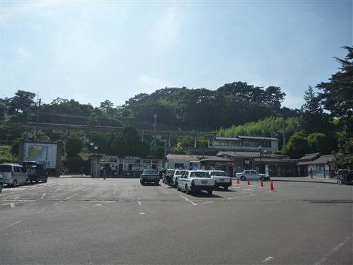
駅は海岸のすぐ近くにある。海岸沿いの遊歩道を歩いていく。
海に浮かぶ島々のおかげで、この辺りは津波の被害が少なかったらしい。
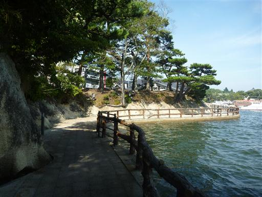
日本三景碑。辺りには団体観光客が多い。
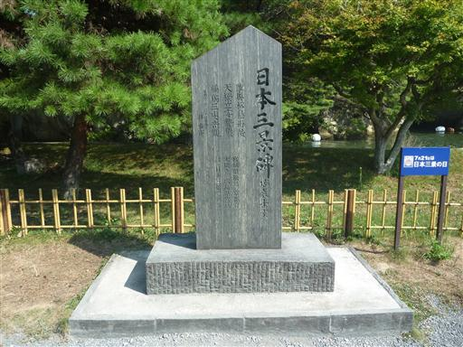
遊覧船に乗っている時間はないので、特に目的地を定めず辺りを散策する。
瑞巌寺五大堂にたどり着く。手前の橋は「すかし橋」という名で、足元から海が見える。
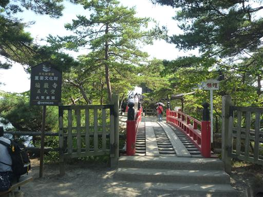
本尊は五大明王像で、中の像を見られるのは何と33年に1回のみである。
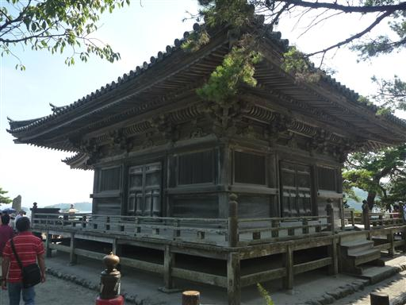
近づいても逃げないためアップで撮影。いい面構えだ。
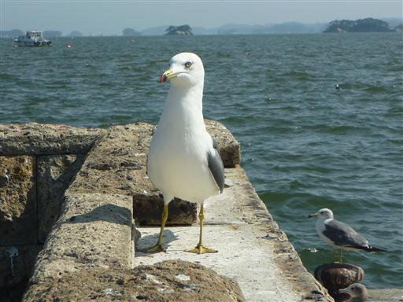
大きな島に向かって長い橋が伸びている。
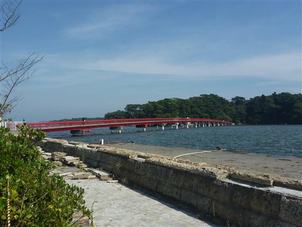
福浦橋という名前の橋のようだ。通行料は200円。
渡った先の島には遊歩道が整備されているということで、行ってみることにする。
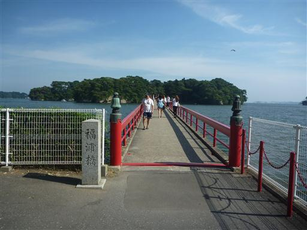
海にはたくさんの船が浮かんでいる。
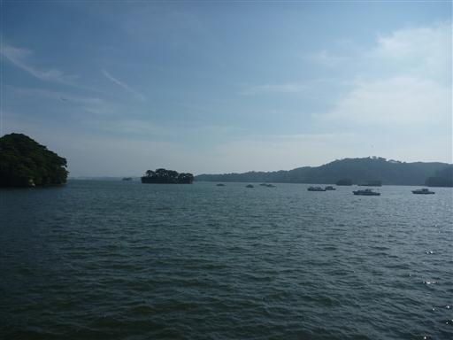
島は美しい岩壁で覆われている。
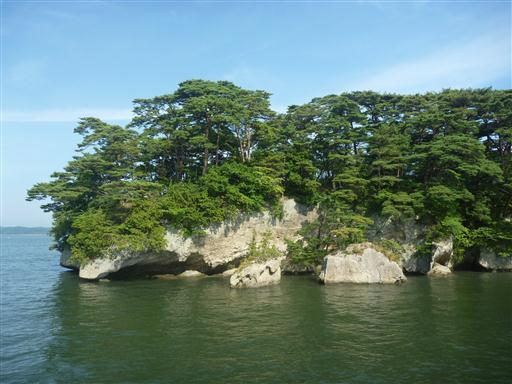
福浦島に到着。よく整備された遊歩道だ。
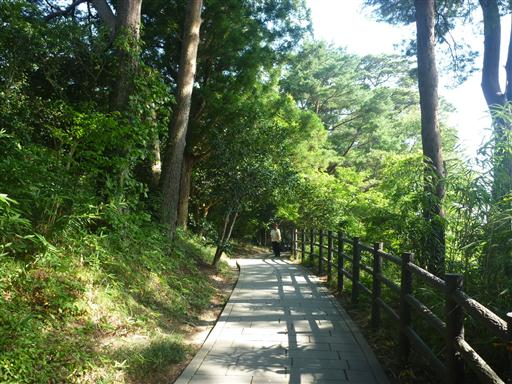
島内にある弁財天。小さなお堂だ。
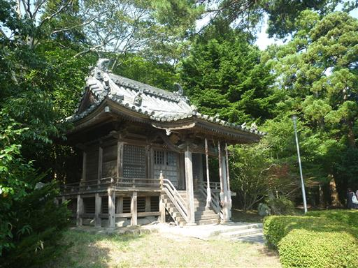
場所によっては土の道になっているため、革靴で歩くのは少々辛い。
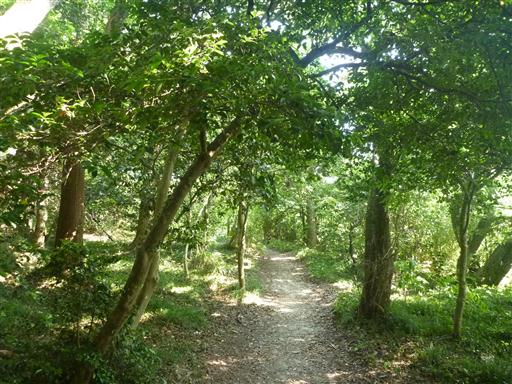
クロアゲハ。
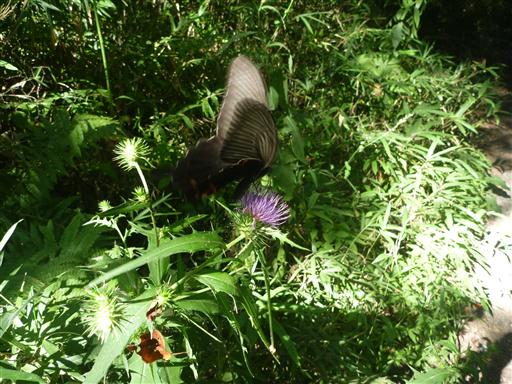
静かな展望台にたどり着く。
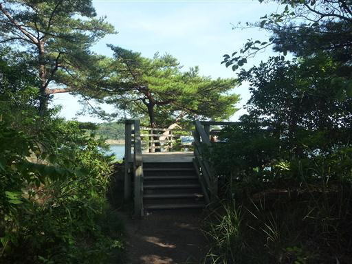
この展望台からは松島の景色が見渡せる。
大小さまざまな島が見えるが、低い場所からの眺めはパッとしない。
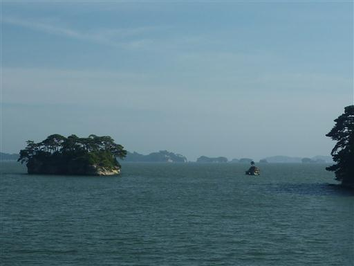
展望台の脇から海の近くまで降りてみる。
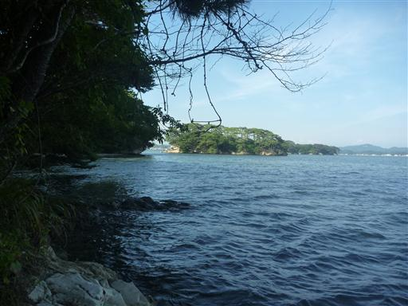
島の真中は公園風に整備されている。
お弁当を広げるには良さそうな場所だが、平日のためか人影はない。
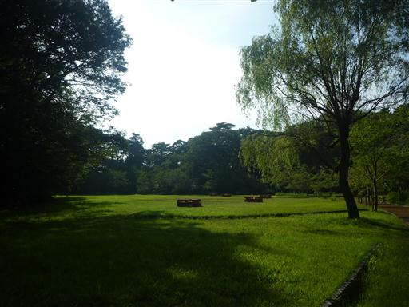
島を一巡りしたら、もう帰る時間だ。
今回はゆっくり散策する時間がなかったが、次に観光に来たときは
高い展望台に登ったり瑞巌寺に訪れたりしてみようと思う。
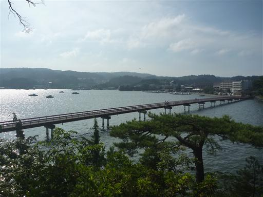